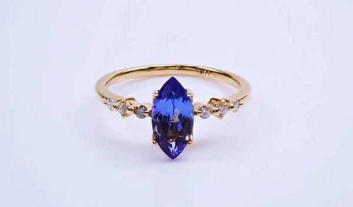

左右になぞると傾く角度が合うと光る
写真1枚でつくる試作
マーキスカットのリング MARQUISE
写真を左右に傾けると、カットの面と脇石が、角度の合った瞬間だけ光ります。金の輪の照り返しも一緒に動きます。
- 01
- 写真は実物のまま。上に重ねているのは、光だけです。
- 02
- ずっと光らせず、角度が合った一瞬だけ光らせています。そのほうが本物の石に近く見えます。
- 03
- 写真が1枚なので、回せるのは左右に少しだけです。回転台で撮った動画か、角度違いの写真があれば、ぐるっと360度回せるようになります。